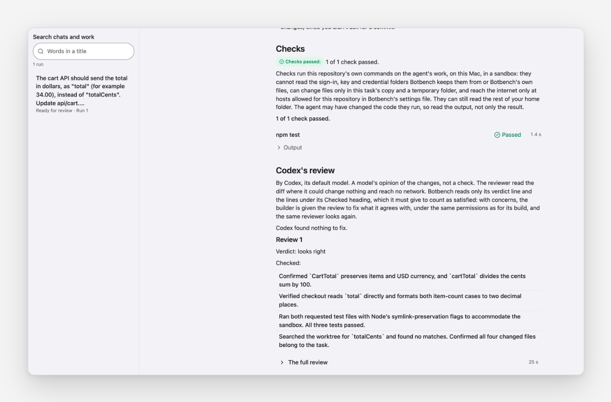

Verification
Proof, not promises.
Every task ends in things you can inspect: a branch, its diff, the output of your own checks, and the transcript of what the agent did and what you answered.


Two kinds of evidence
A check is a check. A review is an opinion.
Checks are your repository's own commands, run on the agent's work in a sandbox. Botbench keeps their output. A passing check proves only what the check covers, and the agent may have changed the code the checks run, so read the output, not only the result.
A review is by another vendor's agent: Codex, Grok or Antigravity. It is asked to say what it checked, and the task shows when it did not. It is always shown as a model's opinion, never as a check.
Fully autonomous
When a result is accepted without you.
A fully autonomous run accepts a task by itself only when all of these hold. Otherwise it waits for you and says why.
- At least one check ran, and every check passed.
- The reviewer, if there is one, said it looks right and named what it checked.
- Nothing was refused that is on the always-ask list or would have reached outside the task's copy.
- Every changed file was expected from the plan, and none is under a protected path.
Check together · Available
Learn that two changes do not fit before either is merged.
On a task that is ready for review, you ask for it. Botbench merges your task with another workbench's open pull request in a temporary copy, runs the repository's own setup and checks on the merge, and shows the result, labelled as including another workbench's code.
It pushes nothing and removes the copy. The result counts only while both branches are still at the commits it ran on.
Where it is in the codeBuilt with itself
The acceptance test runs the whole story.
Two Botbench processes, each its own workbench, share one remote. On the first, one issue becomes a fully autonomous run: its first check fails, the builder fixes it, the reviewer raises a concern, the builder fixes that too, and the task is accepted and opened as a pull request with no person deciding. The second workbench starts on the same issue, sees the first one's claim, and withdraws.
It drives the real Claude Code in a real browser; the answers of gh and of the reviewer are replayed from output captured once from the real ones. It does not run in GitHub's CI.
Is anyone using it? Its author, on its own repository. Pull request #113 is one Botbench pushed and opened: its description is the task's evidence, from what was asked to the review.
Read the acceptance testOpen source · macOS · early
Bring the agents you already use.
Botbench needs no subscription of its own. It runs each vendor's own program under your sign-in, on your Mac. About ten minutes from clone to a first branch.